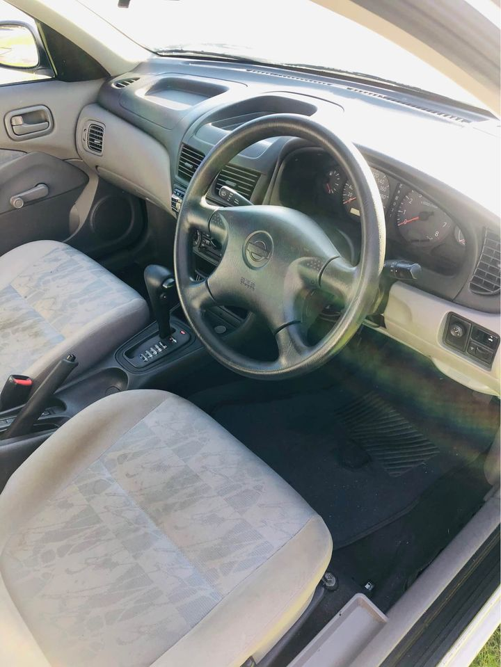

We are one of the biggest nissan car wreckers WA and sell Nissan parts all over the country, not just in WA. Our stock has been rated by our Capricorn customers as the best second hand nissan parts in the industry of Perth. We dismantle and wreck all nissan models and nissan 4×4’s in our 5-acre yard, through environmentally friendly processes and methods whilst keeping the supply prices as affordable as possible to all our customers.
We have a dedicated number of customers who are happy to let us tell them what they like best about our stock! Nissan Car Wreckers and Parts Supplier 2 Douglas St Cobram Vic 3073 www.nissanwrc.com.
We have an exact in-house set of instructions and tools to deal with any nissan car parts which we have in stock at the factory for on-site disassembly and reassembly of any damage. We have the capability to do any car repair and a lot more. In order to get your car home, the Nissan wrecker service will take the car out of the wrecker or trailer and attach your vehicle to another Nissan wrecker with a tow bar. The Nissan wrecker service will follow the customer in their vehicle to their home or business. This means you don’t have to wait hours in the car park for your car to be repaired and towed away. The car then comes back to the yard and we start disassembly, painting and preparation work. All our Nissan car wreckers are heavily modified and controlled by an in-house computer system.

Replacement engine & drive shafts, heater & intercooler hoses, alternator belts & belts, fuel & battery cables, brake & clutch cables, hubs & sprockets, struts & bushings, exhaust hangers & strakes, yoke & shafts, radiator flanges, flywheels & crankshaft, hoses & plugs, shock absorber & coil springs, and much more! What are we willing to sell? We can carry out a complete overhaul on your vehicle, including a full safety check, but due to the large volume of our business, we cannot guarantee on-time delivery. We have limited stock on a daily basis. How long does it take us to do a job? We can complete a job on average of one hour if we are doing the work ourselves, or 24 hours if a professional is used to do the job for us. For all jobs over $10,000, we recommend using a professional.
We sell parts online to your desktop, we have a pick-up point in Perth. We have a quick turnaround for all the parts we have, in 24 hours we can deliver it. If you need a part urgently then call us and we will move our line up to get it to you within the deadline. We will ship it in the next day. We only send out 3 or 4 parts at a time, so it is ideal if you want to order the whole car. We also have a quick turn around, which includes all the body parts. All the cars will have been fully torn down with most all the interior, wiring etc. We carry one of the largest stocks of nissan parts in the industry right here in Perth, and are building an online store for parts and accessories. If you want to order online, simply select the parts you are looking for on the website.
We buy car wreckers pre-owned used cars, we process all the used car paperwork to ensure that you can get the most money for your used cars when we bring them in. You will not get any shortage of parts and we have in stock Nissan parts for every make and model, we also have a large Nissan parts warehouse to stock parts that we don’t have. If you are selling your used nissan, please do contact us to be a part of our trusted Nissan car wreckers in Perth! What services can we provide? We have no minimums for your vehicle and we will do a free inspection of your vehicle.
The story of a solid car wrecker who is so passionate about his job that he is always available to his customers, leaving no stone unturned, that’s Alex Deas, the Founder and owner of Car Wreckers. He genuinely cares about his customers, in particular, making sure that their needs are met before they leave the yard. Being a car wrecker is a highly pressured job and he makes sure that the work done is sustainable and cost effective. He is passionate about his cars and as the owner and in the top position at Car Wreckers, he does his best to make sure that the customers have access to top quality, reliable and reliable services. He is an honest and genuine person, one of the few that he has come across in this business.
Address:103 Sheffield Rd, Welshpool WA 6106
Phone: (08) 9358 1392